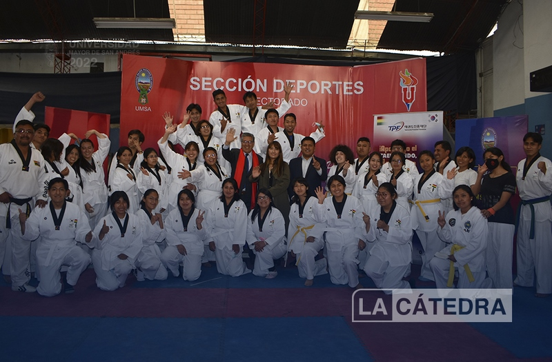

TAEKWONDO UMSA
En el gymanacio de la universidad se dictan los cursos de taekwondo dadas por el Prof Edwin por la tardes
los dias lunes miercoles y viernes
haces mucho cardio mejoras tu flexibilidad y tu rquilibrio y lo mas inportante te ayuda mantenerte sano.
